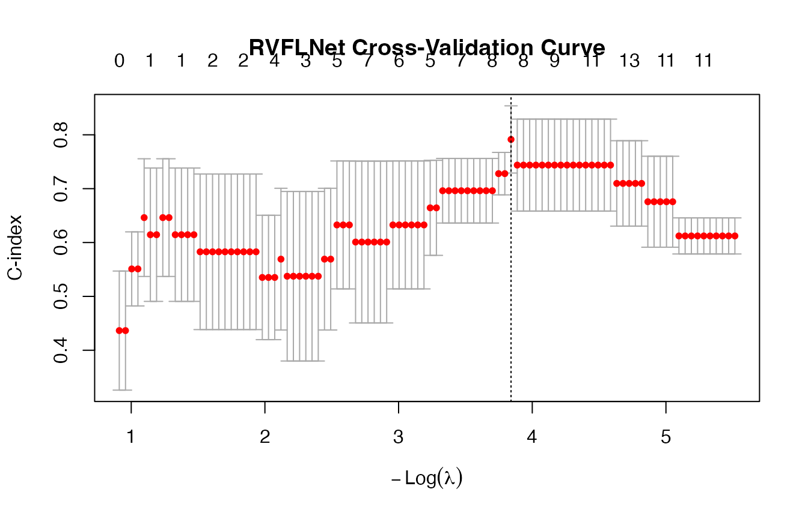
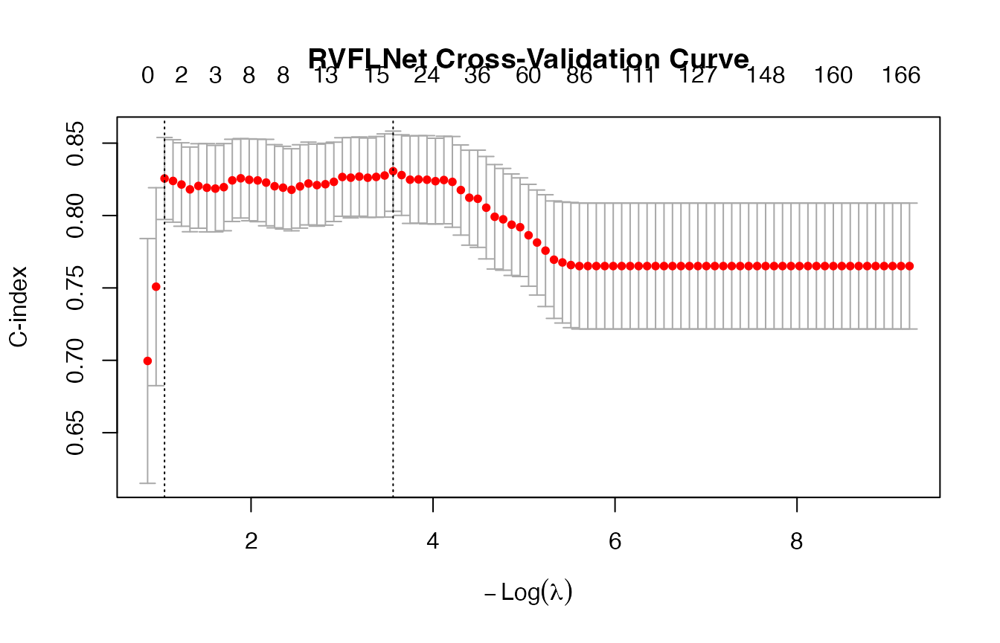
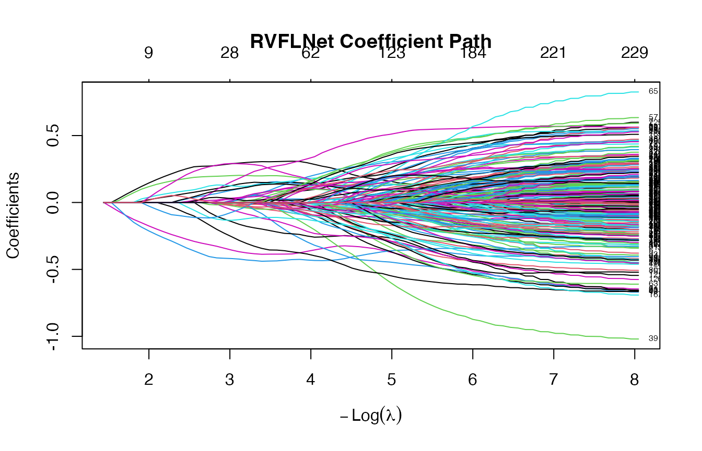
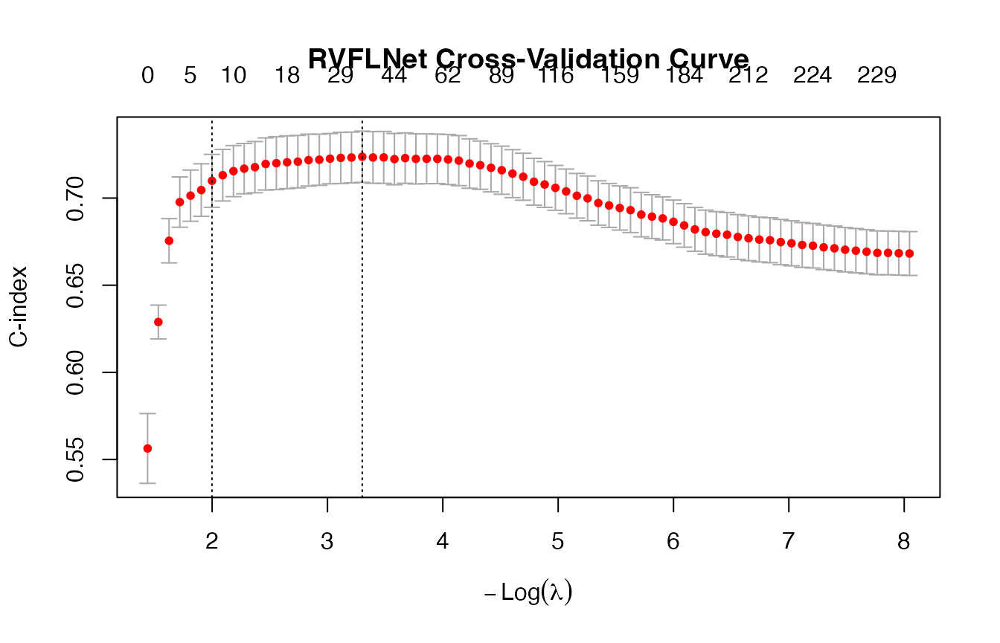

rvflnet_cox.Rmdovarian dataset
## Warning in data(ovarian): data set 'ovarian' not found
X <- as.matrix(ovarian[, c("age", "resid.ds", "rx", "ecog.ps")])
y <- Surv(ovarian$futime, ovarian$fustat)
set.seed(123)
n <- nrow(X)
train_idx <- sample(1:n, size = round(0.8 * n))
X_train <- X[train_idx, ]
X_test <- X[-train_idx, ]
y_train <- y[train_idx]
y_test <- y[-train_idx]
# -------------------------
# Fit model
# -------------------------
cv_fit <- cv.rvflnet(
X_train, y_train,
n_hidden = 200,
activation = "sigmoid",
family = "cox",
nfolds = 5,
type.measure = "C"
)
plot(cv_fit)
# -------------------------
# CV performance
# -------------------------
cv_min <- cv_fit$cvfit$cvm[cv_fit$cvfit$lambda == cv_fit$cvfit$lambda.min]
cv_1se <- cv_fit$cvfit$cvm[cv_fit$cvfit$lambda == cv_fit$cvfit$lambda.1se]
cat("\n===========================\n")##
## ===========================
cat("Cross-Validation (C-index)\n")## Cross-Validation (C-index)
cat("===========================\n")## ===========================## lambda.min CV C-index: 0.7914## lambda.1se CV C-index: 0.7914
# -------------------------
# Predictions (linear predictor)
# -------------------------
lp_min <- as.numeric(predict(cv_fit, X_test, s = "lambda.min"))
lp_1se <- as.numeric(predict(cv_fit, X_test, s = "lambda.1se"))
# -------------------------
# Robust C-index (auto-fix sign)
# -------------------------
c_index_safe <- function(y, lp) {
c1 <- concordance(y ~ lp)$concordance
c2 <- concordance(y ~ I(-lp))$concordance
max(c1, c2)
}
c_min <- c_index_safe(y_test, lp_min)
c_1se <- c_index_safe(y_test, lp_1se)
# -------------------------
# Sparsity
# -------------------------
coef_min <- coef(cv_fit, s = "lambda.min")
coef_1se <- coef(cv_fit, s = "lambda.1se")
p <- ncol(X_train)
# -------------------------
# Output
# -------------------------
cat("\n========================================\n")##
## ========================================
cat("MODEL COMPARISON: lambda.min vs lambda.1se\n")## MODEL COMPARISON: lambda.min vs lambda.1se
cat("========================================\n")## ========================================##
## lambda.min:## C-index: 0.8571## Non-zero: 8 / 203## Original features used: 0## Hidden features used: 8##
## lambda.1se:## C-index: 0.8571## Non-zero: 8 / 203## Original features used: 0## Hidden features used: 8
cat("\n========================================\n")##
## ========================================
cat("RECOMMENDATION\n")## RECOMMENDATION
cat("========================================\n")## ========================================
if(c_1se >= c_min) {
cat("✅ Use lambda.1se - better generalization\n")
cat(sprintf(" (C-index: %.4f vs %.4f)\n", c_1se, c_min))
} else {
cat("⚠️ Use lambda.min - but watch for overfitting\n")
cat(sprintf(" (C-index: %.4f vs %.4f)\n", c_min, c_1se))
}## ✅ Use lambda.1se - better generalization
## (C-index: 0.8571 vs 0.8571)PBC dataset
## Loading required package: Matrix## Loaded glmnet 4.1-10
# -------------------------
# Data: PBC
# -------------------------
data(pbc)
df <- na.omit(pbc)
# Survival object (death = status == 2)
y <- Surv(df$time, df$status == 2)
# -------------------------
# Design matrix (correct handling of factors)
# -------------------------
X <- model.matrix(~ . - time - status - id, data = df)[, -1]
# -------------------------
# Train/test split
# -------------------------
set.seed(123)
n <- nrow(X)
train_idx <- sample(1:n, size = round(0.8 * n))
X_train <- X[train_idx, ]
X_test <- X[-train_idx, ]
y_train <- y[train_idx]
y_test <- y[-train_idx]
# -------------------------
# Scale WITHOUT leakage
# -------------------------
mu <- colMeans(X_train)
sd <- apply(X_train, 2, sd)
X_train <- scale(X_train, center = mu, scale = sd)
X_test <- scale(X_test, center = mu, scale = sd)
# -------------------------
# Fit RVFL Cox model
# -------------------------
cv_fit <- cv.rvflnet(
X_train, y_train,
n_hidden = 200,
activation = "tanh",
W_type = "sobol",
family = "cox",
nfolds = 5,
type.measure = "C"
)## Warning: from glmnet C++ code (error code -92); Convergence for 92th lambda
## value not reached after maxit=100000 iterations; solutions for larger lambdas
## returned
plot(cv_fit)
# -------------------------
# CV performance
# -------------------------
cv_min <- cv_fit$cvfit$cvm[cv_fit$cvfit$lambda == cv_fit$cvfit$lambda.min]
cv_1se <- cv_fit$cvfit$cvm[cv_fit$cvfit$lambda == cv_fit$cvfit$lambda.1se]
cat("\n===========================\n")##
## ===========================
cat("Cross-Validation (C-index)\n")## Cross-Validation (C-index)
cat("===========================\n")## ===========================## lambda.min CV C-index: 0.8306## lambda.1se CV C-index: 0.8256
# -------------------------
# Predictions
# -------------------------
lp_min <- as.numeric(predict(cv_fit, X_test, s = "lambda.min"))
lp_1se <- as.numeric(predict(cv_fit, X_test, s = "lambda.1se"))
# -------------------------
# Robust C-index (fix sign ambiguity)
# -------------------------
c_index_safe <- function(y, lp) {
max(
concordance(y ~ lp)$concordance,
concordance(y ~ I(-lp))$concordance
)
}
c_min <- c_index_safe(y_test, lp_min)
c_1se <- c_index_safe(y_test, lp_1se)
# -------------------------
# Output
# -------------------------
cat("\n===========================\n")##
## ===========================
cat("RVFL Cox on PBC dataset\n")## RVFL Cox on PBC dataset
cat("===========================\n")## ===========================##
## lambda.min C-index: 0.7856## lambda.1se C-index: 0.7856
cat("\nInterpretation:\n")##
## Interpretation:
if (c_1se > c_min) {
cat("✔ lambda.1se generalizes better\n")
} else {
cat("✔ lambda.min fits better (possible overfitting)\n")
}## ✔ lambda.min fits better (possible overfitting)CoxExample dataset
## time status
## [1,] 1.76877757 1
## [2,] 0.54528404 1
## [3,] 0.04485918 0
## [4,] 0.85032298 0
## [5,] 0.61488426 1
## 6 x 1 sparse Matrix of class "dgCMatrix"
## 1
## X1 0.28789109
## X2 -0.01423973
## X3 -0.02245220
## X4 0.08798252
## X5 .
## X6 -0.35173526## 6 x 1 sparse Matrix of class "dgCMatrix"
## 1
## H195 .
## H196 .
## H197 .
## H198 .
## H199 .
## H200 .
set.seed(1)
cvfit <- cv.rvflnet(x, y, family = "cox", type.measure = "C")
plot(cvfit)
cvfit$cvfit$lambda.min## [1] 0.0368321
cvfit$cvfit$lambda.1se## [1] 0.1354824
# -------------------------
# CV performance
# -------------------------
(cv_min <- cvfit$cvfit$cvm[cv_fit$cvfit$lambda == cv_fit$cvfit$lambda.min])## [1] 0.7214934
(cv_1se <- cvfit$cvfit$cvm[cv_fit$cvfit$lambda == cv_fit$cvfit$lambda.1se])## [1] 0.6755003